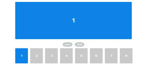
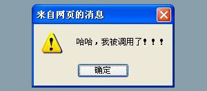
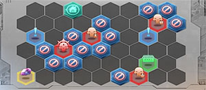

- html
- css
- javascript
- jquery
- php
- photoshop
精通前端，涉猎后端 — 编写艺术般的代码
对技术充满热情 — 求学之路上，邂逅前端之美
-
华东师范大学软件工程专业硕士。
接下来，就是见证奇迹的时刻！ -
盐城师范学院数字媒体技术专业学士。
大学期间与同学共同完成“乐玩乐”网站项目，并成功在校园推广。
曾担任校信息中心宣传部部长，校青协宣传部干事，院宣传部部长，班宣传委员、文艺委员。
通过英语四级考试，多次获得奖学金、助学金。 -

沛县第一中学“扛把子”。
沛县为大汉之源。
沛县第一中学自1923年创办以来，就植根于这片沃土，紧随时代的脚步，自强不息、风雨兼程，为祖国培育出一代又一代英才。
初中时期，我立志要考取这所梦寐以求的高中，最终在预招生中考取实验班，免去了就读期间的一切费用。
曾在著名游戏公司任职 — 有大型网站架构与开发经验
-
游族网络 — 高级前端开发工程师（在职）
1、负责前端相关开发工作，使用HTML5/CSS3/Javascript开发符合标准的前端页面；
2、优化页面代码，提供优异的用户体验；
3、确保各浏览器、各分辨率各系统手机设备的兼容性及项目的高性能化；
4、与后台工程师深度交流合作，一起研讨技术实现方案；
5、不断探索并总结网站的前端开发模式和规范。 -
百度在线网络技术(北京)有限公司上海软件技术分公司 — Web前端开发工程师（离职）
1、讨论制定Web前端开发框架；
2、负责公司PC端、移动终端项目的web前端页面开发；
3、负责前端页面开发和维护，并根据需求优化产品性能、用户体验、交互效果及各种主流浏览器的兼容适配工作。 -
上海邮通科技有限公司（世纪天成） — 前端工程师（离职）
1、游戏官网及活动专题重构与制作；
2、页面日常维护及更新；
3、编写系统级JavaScript组件，并提供使用说明；
4、参与或主导产品前端框架，并为之制定规范/说明文档；
5、帮助和培训其他组员相关前端知识，共同提高技能水平。
丰富的项目经验 — 业余项目与公司项目相互促进
-
反恐精英Online官网 V6
反恐精英Online官网第六次改版。主要负责超首、首页与公共插件库的开发。
-
魔甲时代官网首页、新闻页
魔甲时代官网首次上线。主要负责首页、新闻页的开发以及网站的部署与上线。
-
封印者官网优化调整
封装与优化广告轮播系统，使整个站点性能大幅提升，并提高了用户体验。
-
跑跑卡丁车官网轮播系统升级
为满足跑跑卡丁车项目需求以及提高用户体验度，对跑跑卡丁车官网广告轮播系统优化升级。
-
Yplayer原生视频播放器
为了提高页面开发效率，基于Vcastr 2.2 开发的原生视频播放器插件。主要用于封印者官网。
-
Lottery原生九宫格抽奖插件
适用于跳转性抽奖效果，具体抽奖数目和样式可自行设置。特点：向下兼容至IE6，体积小。
-

Ads插件(适用于各种轮播)
摆脱轮播系统对JQuery库的依赖，主要用于广告轮播系统，体积小 、兼容性高。
-
Log锁屏弹出层插件
纯原生插件，摆脱类库的束缚。解决了多层次弹出层相重叠及IE 6下无法盖住select组件的Bug。
-

JavaScript 事件派发器
单例模式，对于单页交互中组件之间的通信非常有用。
-

星际迷航小游戏
基于Laya游戏开发引擎和MornUI框架，后端通信使用php。
- 敬请期待...